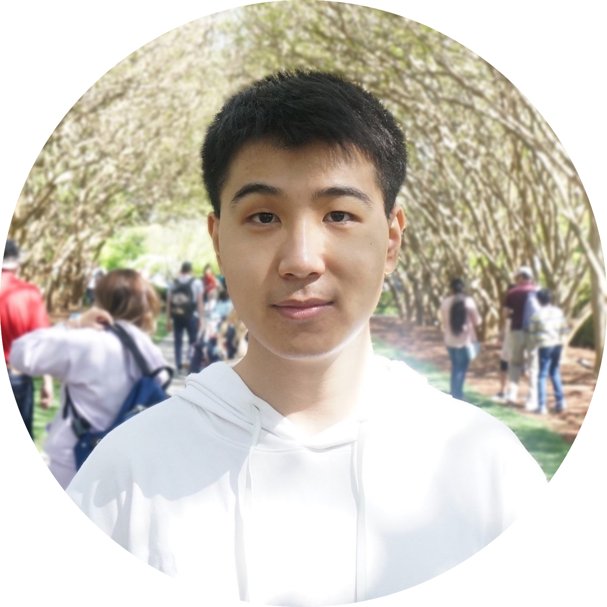
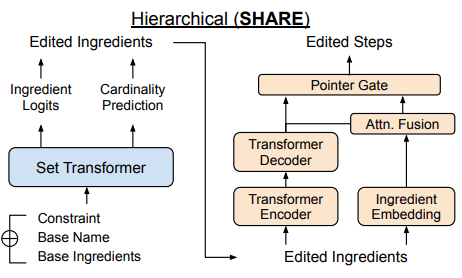
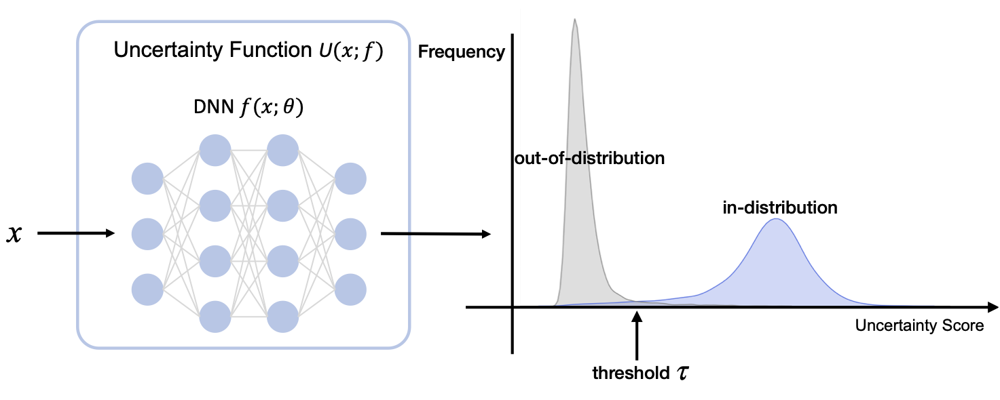
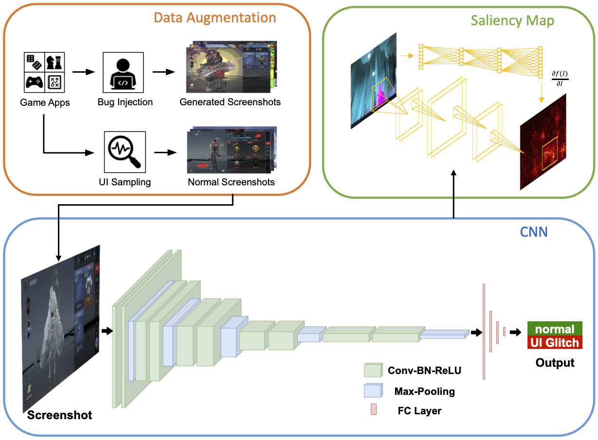

|

|
I am a 2nd-year Ph.D. student advised by Prof. Wei Yang in Computer Science at the University of Texas at Dallas (UTD).
I conducted research at the intersection of natural language processing (NLP), computer vision (CV), and software engineering (SE).
I also focused on the application of NLP in data mining and recommender systems, and investigated the explainable AI such as model uncertainty measurements.
Email /
CV /
Google Scholar /
GitHub /
LinkedIn /
Facebook
|
|
Publications (* denotes equal contribution)

|
SHARE: a System for Hierarchical Assistive Recipe Editing
Shuyang Li, Yufei Li, Jianmo Ni, Julian McAuley
2021 ArXiv preprint (CoRR)
[Paper]
|
|

|
Estimating Predictive Uncertainty Under Program Data Distribution Shift
Yufei Li, Simin Chen, Wei Yang
2021 ArXiv preprint (CoRR)
[Paper]
|
|

|
GLIB: Towards Automated Test Oracle for Graphically-Rich Applications
Ke Chen*, Yufei Li*, Yingfeng Chen, Changjie Fan, Zhipeng Hu, Wei Yang
29th ACM Joint European Software Engineering Conference and Symposium on the Foundations of Software Engineering (ESEC/FSE 2021)
[Paper][Code][Slides]
|
|
|
Work Experience
NEC Laboratories America, Inc., Princeton, NJ, U.S.
Research Intern • June 2021 to Aug 2021
• Annotated name entities and relations with regular expression rules on CVE texts for distant supervision
• Incorporated the pre-trained GPT-2 backbone into a sequence labeling framework for joint entity & relation extraction
• Proposed a bootstrap training procedure for denoising distant labels and selecting high-quality instances
Mentor: Xiao Yu
Data Science & System Security Department
|

|
SeekTruth Scientific and Technical Corporation, Beijing, China
Research Intern • July 2019 to Sept 2019
• Boosted an adaptive discrimination definition model for objection detection
• Designed a light-weight CNN model for identifying the direction of videos
• Built a joint key point & pose recognition model for character detection
Mentor: Chuanhe Liu
Deep Learning & Algorithm Department
|
|
|
Honors & Awards
VEX Robotics International Competitions
• Excellent Award and runner-up in VEX Robotics World Championship 2017, Louisville, KY, U.S.
• Excellent Award and runner-up in VEX Robotics Asia Open 2016, Beijing, China
• First Class Honor in VEX Robotics China Open 2016, Xi'an, China
|
|
Scholarship Awards
• National encouragement scholarship 2015-2017
|
|
|
|